Sourdough
Long-fermented with white, wholemeal and rye flours and our rye sourdough starter, for a rustic loaf with a lovely sour flavour.
Order onlineTwelve artisan breads, fresh pastries, homemade soups and lunches, all made in our bakery on Caledonian Road.
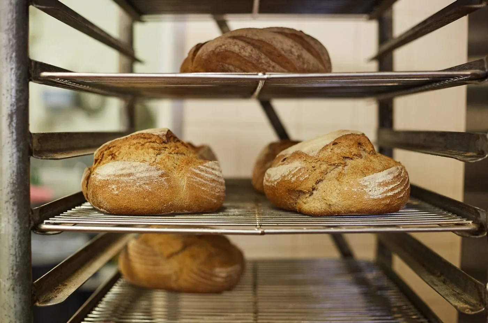
Showing 24 items
Long-fermented with white, wholemeal and rye flours and our rye sourdough starter, for a rustic loaf with a lovely sour flavour.
Order online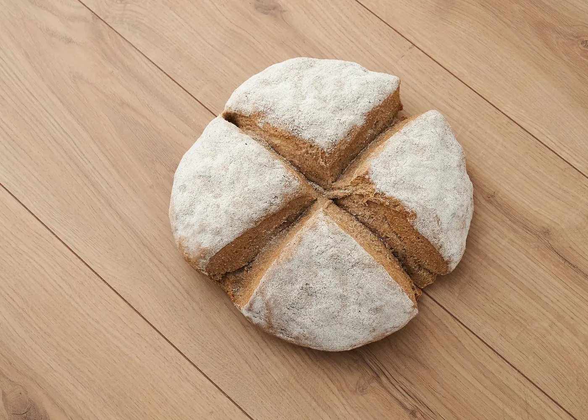
Ireland’s most famous bread, made with white, wholemeal and rye flours, buttermilk, baking soda and salt.
Order online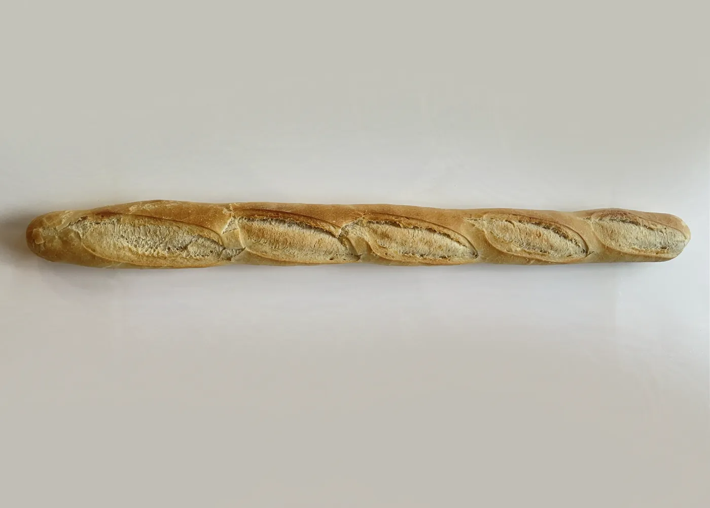
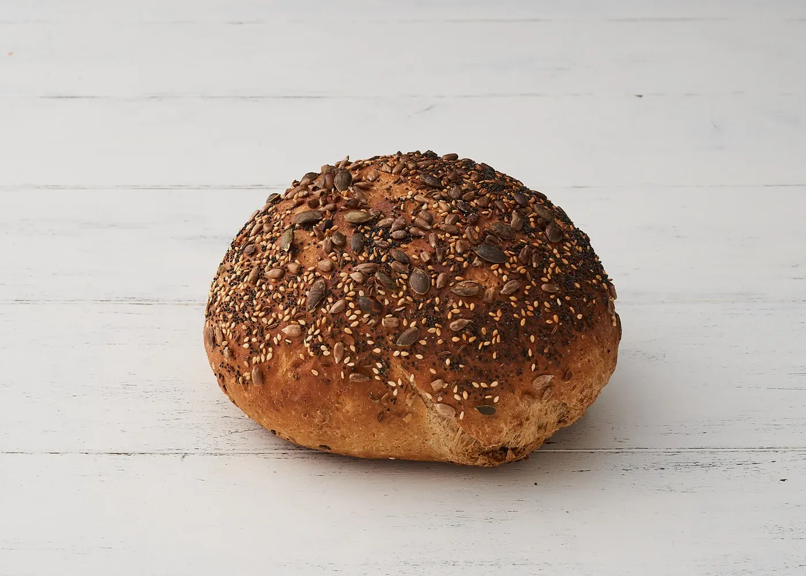
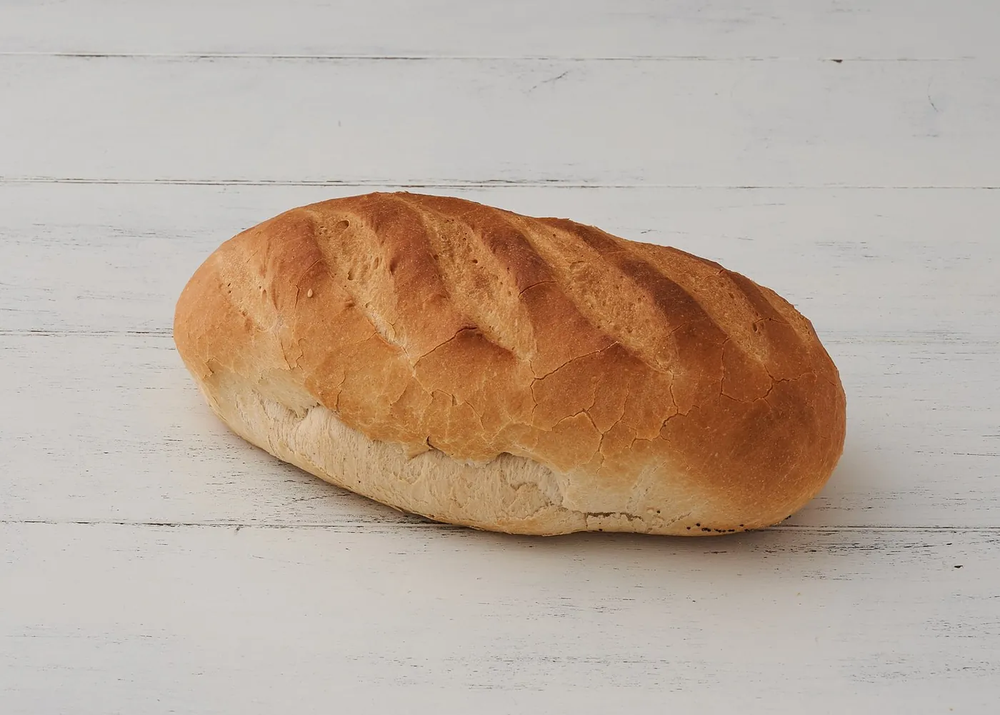
A classic British loaf developed during the war, with 7 cuts allowing a slice each day.
Order online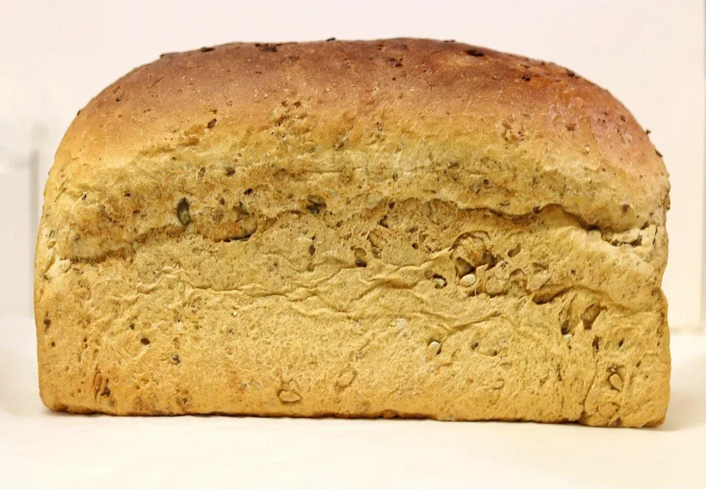
A blend of wheat and malted flakes, combined with a variety of seeds and grains.
Order online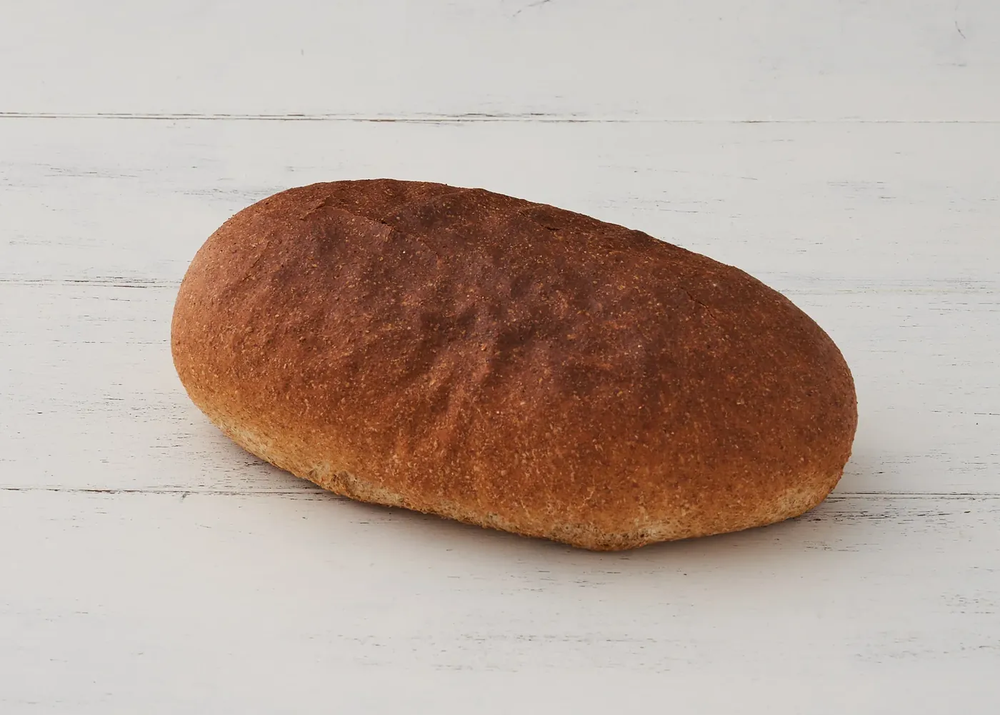
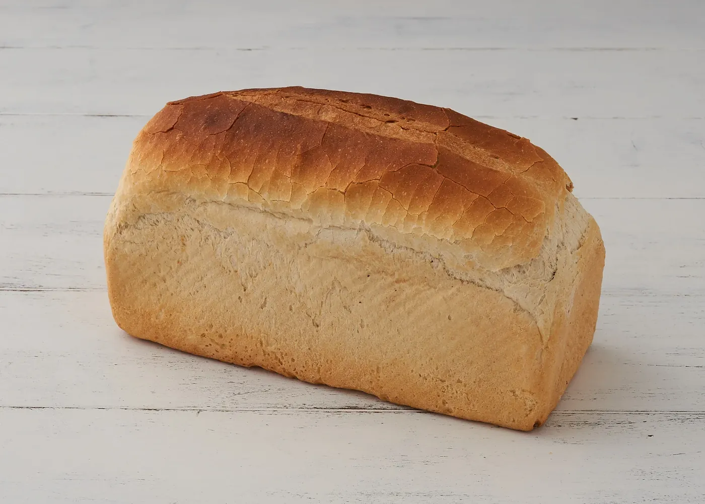
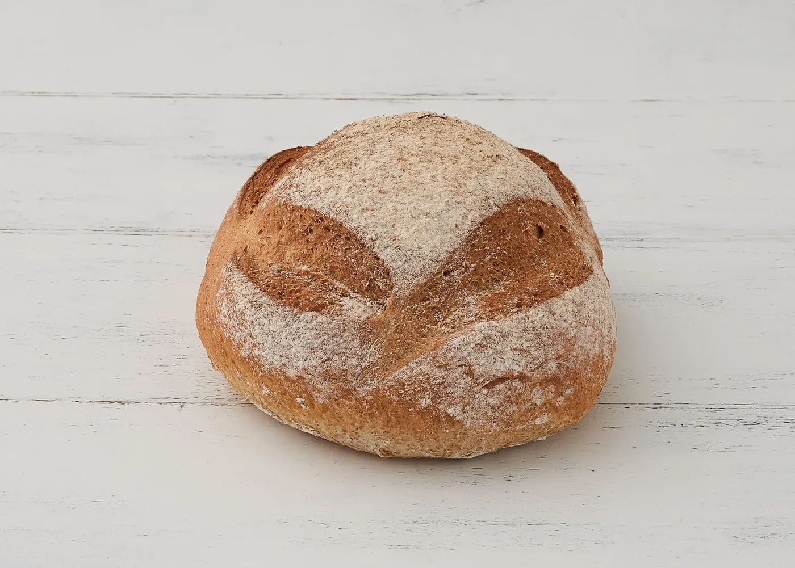
Wheat flour with chia seeds, high in fibre and Omega 3. “Chia” is Aztec for “what makes you strong”.
Order online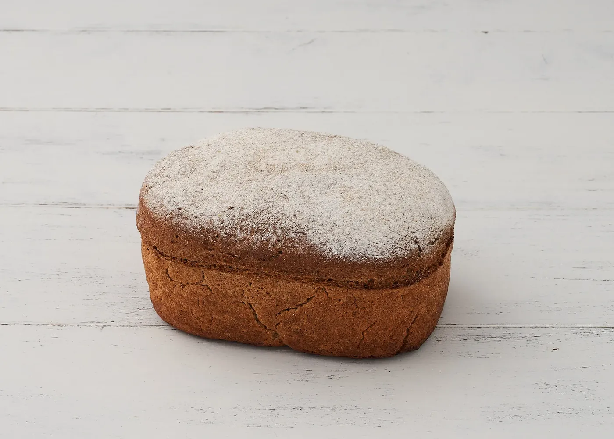
A dense, wheat-free sourdough made with a blend of dark and light rye flours. Contains gluten.
Order online


Plain croissant, pain au chocolat, pain au raisin and luxury almond croissant.
Ask about this
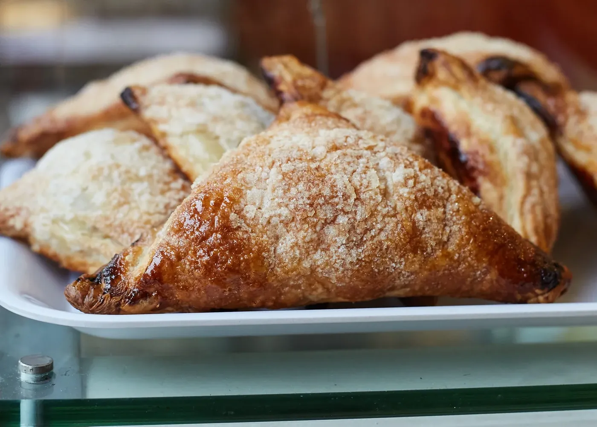


Our customers’ favourite, made by hand, with a vegan option.
Ask about this
Spinach & feta, cheese & onion, chicken & mushroom, steak slice and Cornish pasty.
Ask about this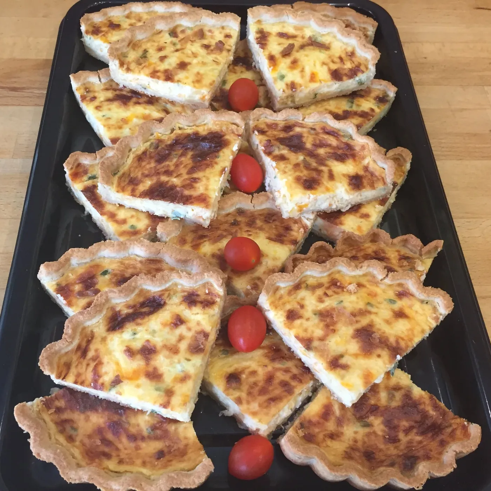


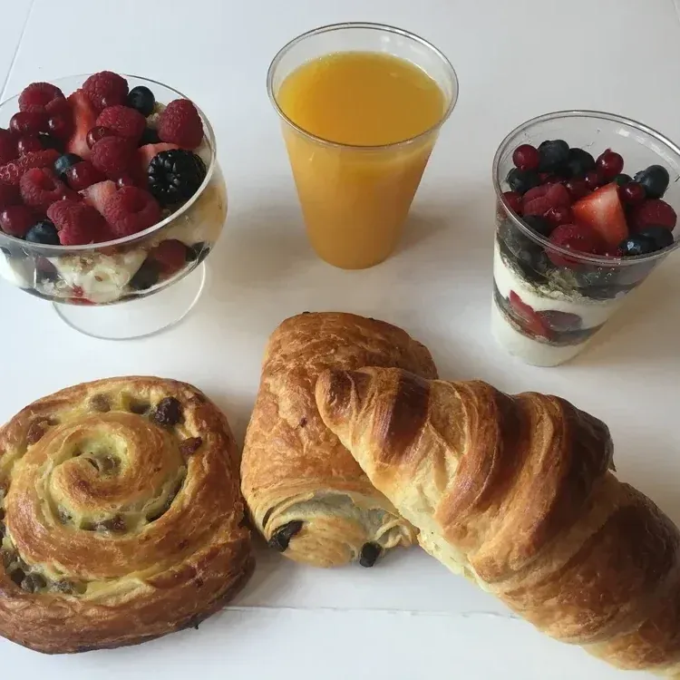
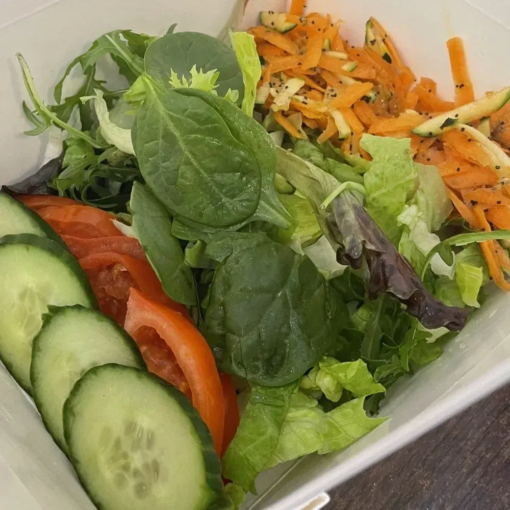
No items match your search. Try another word, or ask us.
Our 100% German Rye is wheat free, but rye contains gluten, so it isn’t suitable for coeliacs. We offer vegetarian and vegan options. Our kitchen handles wheat, gluten, nuts, eggs, dairy and seeds, so please ask our team before ordering.
Bread is baked fresh every day. Challa is available on Fridays and Saturdays. Popular loaves sell out, so order ahead online.
Takeaway coffee with Kimbo beans, teas, freshly squeezed orange juice, breakfasts, omelettes made to order and daily specials.
Visit our bakery, browse our menu or get in touch to plan something delicious.